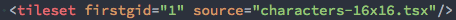
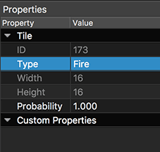

View on GitHub
View on GitHub Install in Dash
Install in Dash Tiles Reference
Tiles Reference
Working with Tiles
- Querying Tiles at Location
- Querying Tiles with ID
- Find Tiles of Type
- Find Tiles with Property
- Adding and Removing Tiles
- Tile Shapes
- Animated Tiles
- Physics
- Tile Overlap
SKTiled provides several ways to work with tiles in your tilemap. Most of the methods for accessing tiles from a tile layer instances have corresponding methods in the parent SKTilemap node which will aggregate the results from all tile layers.
Querying Tiles at Location
Accessing tiles is simple: simply query a tile layer or the tile map node for tiles at a given coordinate:
// return tile(s) at a given location
let coord = CGPoint(x: 10, y: 8)
let tilesForCoord = tileLayer.tileAt(coord: coord)
let allTilesForCoord = tilemap.tilesAt(coord: coord)
Querying Tiles with ID
Global ID
To query tiles with a global ID, pass the value to either the SKTilemap node, or an individual SKTileLayer node:
// query tiles from the tile map node
let tiles = tilemap.getTiles(globalID: 10)
// query tiles from the parent layer
let tiles = tileLayer.getTiles(globalID: 10)
Local ID
If you have a reference to a tileset object and want to query tile data with a local id, use the SKTileset.getTileData(localID:) method. Here’s a reference to an external tileset with a firstgid value of 1. So if we want to access tile data with a local id of 79, we can query the tileset instance directly:


if let tiledata = tileset.getTileData(localID: 79) {
print(tiledata)
}
// Tile ID: 78 @ 16x16, 6 frames
As you can see, the tile data is correctly returned. The local ID is the sum of the tileset’s firstgid value plus the tile’s actual ID. (1 + 78 = 79)
Find Tiles of Type
The string property type can be used to label or group tiles in SKTiled. Adding a string property to a tile ID will allow it to be accessed from SpriteKit:

Querying any tile with that property is simple:
let allFireTiles = tilemap.getTiles(ofType: "Fire")
let fireTiles = tileLayer.getTiles(ofType: "Fire")
Find Tiles with Property
You are not restricted to using type as a property name - any property name/value can be queried:
let fireTiles = tilemap.getTilesWithProperty("Attack", "Fire")
let waterTiles = tilemap.getTilesWithProperty("isWater", true)
Adding and Removing Tiles
To add a new tile using a GID, use the SKTileLayer.addTileAt method to add it to the current layer:
if let tile = tileLayer.addTile(at: 5, 8, gid: 32) {
tile.setupPhysics(withSize: 8)
}
You may also specify a tile type with this method, for use with the SKTilemapDelegate.objectForTileType protocol method:
if let wallTile = tileLayer.addTile(at: 2, 17, gid: 145, tileType: "Wall") {
// set the custom tile property
wallTile.hitMaxCount = 3
}
You are not limited to using tile objects; any SKNode type can be added to a layer and positioned. All SKTiledLayerObject objects have expanded addChild convenience methods for positioning nodes:
// add a child with a coordinate and offset and zPosition values
tileLayer.addChild(tile, 5, 8, offset: CGPoint(x: 4.0, y: 8.0), zpos: 50)
// add a child with a coordinate and offset-x value
tileLayer.addChild(tile, 5, 8, dx: 4)
To remove a tile, simply call one of the SKTileLayer.removeTileAt methods:
if let removedTile = tileLayer.removeTileAt(10, 8) {
// do something with tile
}
Tile Shapes
It is also possible to create shapes from individual tiles. All SKTiled geometry types have a getVertices() method which will return an array of points that constitute the object’s shape.
let tileVerts = tile.getVertices()
Animated Tiles

Tile animations in Tiled will render if you add update your tilemap instance in your SpriteKit scene’s SKScene.update method. Animated tiles are easily accessed with the parent SKTileLayer.animatedTiles method, or globally via the SKTilemap.animatedTiles method:
// return animated tiles in a single layer
let animatedTiles = tileLayer.animatedTiles()
// return all animated tiles
let allAnimatedTiles = tilemap.animatedTiles()
All SKTile instances allow you to pause and change the animation speed:
// pause or unpause tile animation
for animatedTile in animatedTiles {
animatedTile.isPaused = true
}
// double animation speed
for animatedTile in animatedTiles {
animatedTile.speed = 2.0
}
// run animation backwards
for animatedTile in animatedTiles {
animatedTile.speed = -1
}
To stop animation, use the SKTile.removeAnimation(restore:) method to remove the animation, and the SKTile.runAnimation method to restore it:
// remove the animation (optionally restore the original texture)
for animatedTile in animatedTiles {
animatedTile.removeAnimation(restore: true)
}
// restore tile animations
for animatedTile in animatedTiles {
animatedTile.runAnimation()
}
Updating Tile Animation
It’s easy to add or change the animation for tile objects, but bear in mind that as SKTilesetData objects are still linked to their parent tileset, changing or removing animation one will change every tile that references that data.
To change the animated frames of a tile, you will first need to access the tile data, either from the tile itself, or the parent tileset:
// access from tile
let tileData = tile.tileData
// access from tile
let tileData = tileset.tileData
To add animation to a tile, add ID values to the SKTilesetData instance. Frame durations are stored in milliseconds to match Tiled’s:
tileData.addFrame(withID: 33, interval: 250)
tileData.addFrame(withID: 34, interval: 350)
tileData.addFrame(withID: 35, interval: 150)
You also have the option of manipulating frames directly:
// set the texture for a specific frame. The old texture is returned (if one exists)
let jumpTexture = SKTexture(imageNamed: "jump-alt-002")
let oldTexture = tileData.setTexture(jumpTexture, forFrame: 2)
// change the frame interval for a frame (in milliseconds)
if tileData.setDuration(interval: 200, forFrame: 2) {
print("frame 2 duration is now 200!")
}
Physics
Physics can be turned on for tile objects with the SKTileObject.setupPhysics methods. Passing the argument isDynamic determines whether the physics body is active or passive.
// create a physics body with a rectangle of size 8
tile.setupPhysics(shapeOf: .rectangle, isDynamic: true)
// create a physics body with a rectangle of size 8
tile.setupPhysics(rectSize: CGSize(width: 8, height: 8), isDynamic: true)
// setup dynamics on an array of tiles with a radius of 4
let dots = dotsLayer.getTilesWithProperty("type", "dot" as AnyObject)
dots.forEach {$0.setupDynamics(radius: 4)}
Tile Overlap
The tile overlap value is used to help alleviate the cracks
that sometimes appear when the tilemap or worldNode is scaled. The value is clamped with the SKTile.maxOverlap value. Usually a value between 1.0 - 3.0 is effective. While you can set the overlap value on individual tiles & tile layers, for best results set it via the SKTilemap.tileOverlap property:
// this will override values for every tile
tilemap.tileOverlap = 1.0
// set the overlap for an entire layer
tileLayer.setTileOverlap(1.0)
// set the overlap on individual tiles
tile.setTileOverlap(1.0)
Next: Coordinates - Index